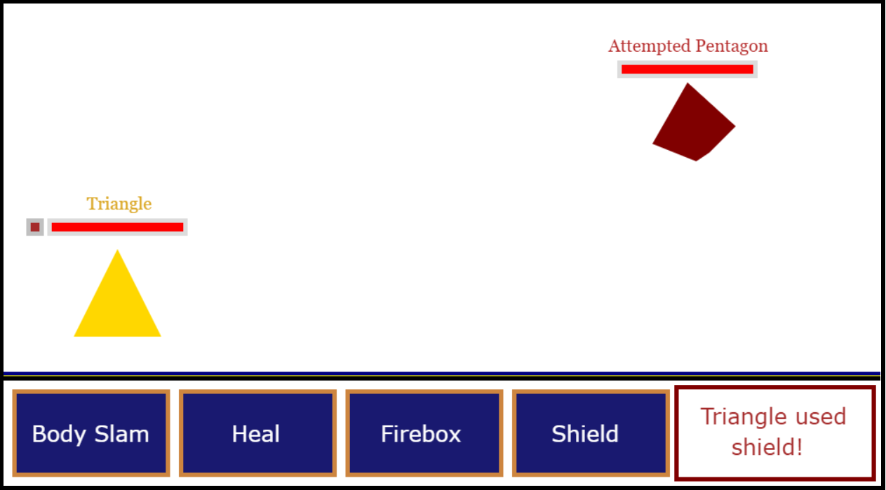

Developer's Page
Unfortunately, while there are quite are few projects I would love to show off, a few of them were lost over the years since I didn't know VCS were even a thing back then. Some of these projects include a currency exchanger, a discord bot, a pet care simulator, and etc. No point in crying over spilled milk though and let's get into the projects I can show off!
Pokemon Decoy (High School)

Pokemon decoy was a project I worked on while in high school and was the enterprise that made me want to pursue computer science. The game was built in HTML, CSS, and Javascript and mimics the combat in Pokemon. Players would take turns casting their abilities and the first player whose health bar goes to 0 loses. This project is not optimal at all and misses features like telling players how to actually use their abilities (QWER for triangle abilities and AS for attempted pentagon). Otherwise, I still remember this project fondly due to its sheer attention to detail such as the health bar of players shaking when damaged and buttons flashing when pressed. The website also has a feature that allows it to be played in Japanese. I believe the website is still running and, if it is, you can access it here .